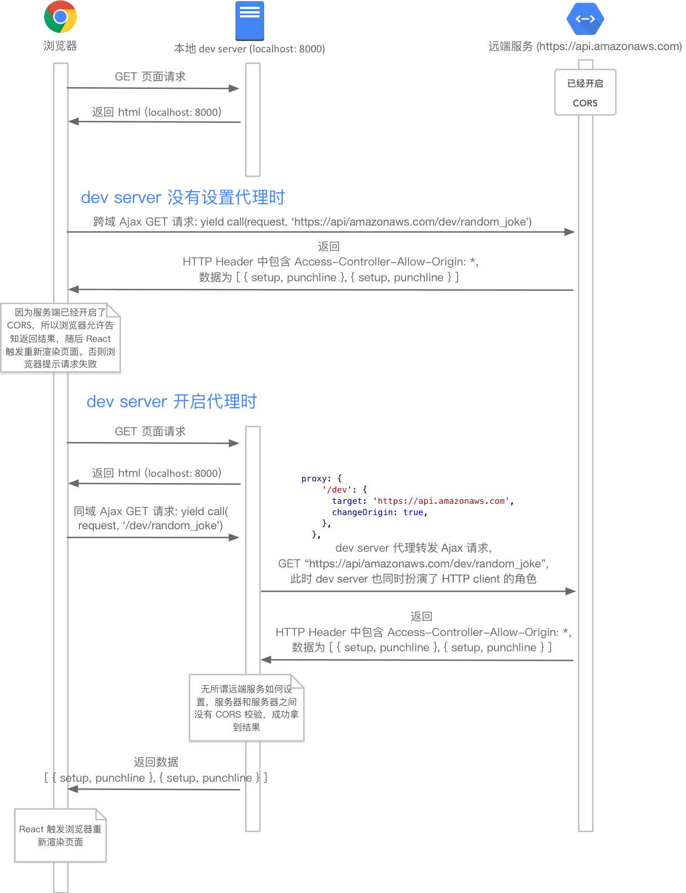
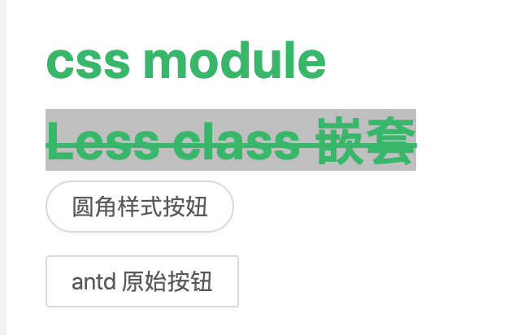

知识上的投资总能得到最好的回报。
——本杰明.富兰克林 (美国开国元勋 物理学家 作家)
目标: 结合前几篇文章，汇总一个小Demo.
React实战
本示例依照Ant Design 实战教程（beta 版）进行编写，非常感谢各位大佬的倾情付出！谢谢🙏
正是江南好风景，落花时节学代码

有了前两节的铺垫，这个Ant Design 实战教程（beta 版）也觉得挺顺手的，汇总下编写的流程以及接下来要进一步学习的内容。
第一部分 整体概述
该demo是个典型的SPA项目，实现功能如布局、侧边栏、列表、表格、弹窗等，其中包含：
Umi，中文可发音为乌米, 是可扩展的企业级前端应用框架。Umi 以路由为基础的，同时支持配置式路由和约定式路由，保证路由的功能完备，并以此进行功能扩展。然后配以生命周期完善的插件体系，覆盖从源码到构建产物的每个生命周期，支持各种功能扩展和业务需求。
DvaJs首先是一个基于 redux 和 redux-saga 的数据流方案，然后为了简化开发体验，dva 还额外内置了 react-router 和 fetch，所以也可以理解为一个轻量级的应用框架。
Antd 是基于 Ant Design 设计体系的 React UI 组件库，主要用于研发企业级中后台产品。
1 | hhw-4:antd-course hhw$ tree -L 4 -I node_modules |
其实有了React、Redux的基础，示例代码很容易看懂，在这里就不贴代码了，罗列一些操作中疑惑的地方。
第二部分
一、DvaJs–Effect
Reducer如果做了异步操作，将破坏redux中reducer是纯函数的机制，effect 就是专门处理这些具有 “副作用” 的操作的执行单元。
1 | export default { |
宏观上看，effect 是一层中间件。
局部上看 effect 就是一个一个的 generator function。
1. 中间层
什么是中间层？
“ Middleware is some code you can put between the framework receiving a request, and the framework generating a response. “当 action 被 dispatch 之后，会先到达 effect 处理副作用，然后该 effect 最终会促使新的 action 发送出去，这个新的 action 可能被其他的 effect 再捕获继续处理，也可能被 reducer 捕获并结束，无论怎样，最终处理逻辑的终点都将是 reducer。2. generator function。

异步的实质是事件发生促使程序的执行点来回跳转。我们使用 callback 本质上是描述跳转的一种手段。generator function 并没有改变异步的本质，只是改变了描述的方式，使得程序看起来像是同步一样。
一个 generator function 在执行时有 两方。一方是 generator function 本身，另一方是 generator function 的句柄持有者，而这一般都是框架所持有。我们姑且称这个句柄为 genStub。当框架调用 genStub.next() 时，generator function 会执行到下一个 yield 然后暂停，并把 yield 后面表达式的计算值返还给框架，同时把程序执行权交给框架。框架拿到值后做处理，比如就是异步处理，处理结束拿到结果，再次调用 genStub.next()，返还值给 generator function 同时驱动它恢复执行。当恢复执行时，你可以认为 返回的处理结果会整体替换 yield <expression>，然后程序继续执行到下一个 yield。
yield 这个单词用在这里特别形象：yield 本身有「让步」的意思，也有「产出」的意思。
「generator function yield 到外部的值」和「外部返还给 generator function 的值」不是一回事！！！
**
3. 使用
入参有两个对象，第一个对象就是匹配这个 effect 的 action 对象，因此可以取到约定的 payload 这个字段，第二个对象是** effect 原语集**，其中 call, put 最为常用，
1 | call: 阻塞 用于调用异步逻辑，支持 promise |
示例
二、代理
在前端开发中，一种常见的规避跨域的方法就是：把 ajax 请求发送到你的本地开发服务器，然后本地开发服务器再把 ajax 请求转发到远端去，从网络拓扑上看本地开发服务器起着「反向代理」的作用。本地服务器和远端服务器是「服务器和服务器间的通信」，就不存在跨域问题了。
配置代理也很简单，只需要您在配置文件 config/config.js 中与 routes 同级处增加 proxy 字段，代码如下，
1 | + proxy: { |
配置的含义是：去往本地服务器 localhost:8000 的 ajax 调用中，如果是以 /dev 开头的，那么就转发到远端的 https://08ad1pao69.execute-api.us-east-1.amazonaws.com 服务器当中，/dev 也会保留在转发地址中。

三、二次封装
Antd真的很赞！对于开发者而言，公共的代码其实可以二次封装一下，比如from表单等，可以减少不少的代码。
四、CSS Modules
CSS Modules 详解及 React 中实践
CSS MODULES用法教程
CSS modules 将生成全局唯一的hash值【标签实际的class】。通过全局唯一的class name 变相的就可以获取到局部作用域【scoped css】，如果一个 CSS 文件仅仅是作用在某个局部的话，我们称这样一个 CSS 文件为 _CSS module_。
注意：很多 CSS 选择器是不会被 CSS Modules 处理的，比如 body、div 、a 这样的 HTML 标签名就不会。我们推荐如果要定义局部 css 样式/动画， 只使用 class 或 @keyframe。
Less 是一个 CSS 的超集，Less 允许我们定义变量，使用嵌套式声明，定义函数等。严格说 Less 包含两部分：1. Less 的语法。2. Less 预处理器（Less preprocessor）。浏览器终究只认识 CSS，所以 Less 文件需要经过 Less 预处理器编译成为 CSS。
在工具的支持下，一个 Less 文件首先会经过 CSS modules 的编译，把类名全局唯一化，然后才被 Less preprocessor 编译成为 CSS 文件。正因此，Less 文件可以和 CSS modules 无缝联合使用。
1 | // less 文件 |
1 | <div> |

最后强调，global 不应该被滥用，特别地我们建议：若想在某个文件中覆盖 antd 样式，请加上一个类似 .override-ant-btn 的类包裹住 global 修饰的名称，以避免全局样式声明分散在项目各处。
还有很多待补充的内容，边做边学
参考链接
- 阮一峰老师的 redux 三部曲。
- redux-saga 的中文文档。
- 使用 Dva 开发复杂 SPA
- Dva源码解析